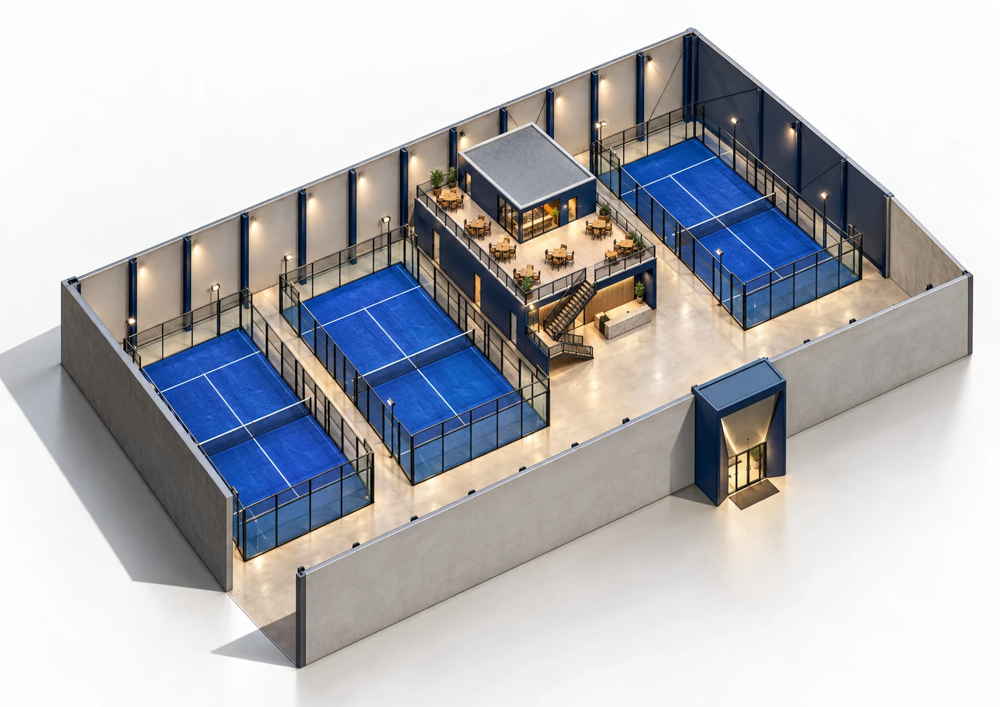
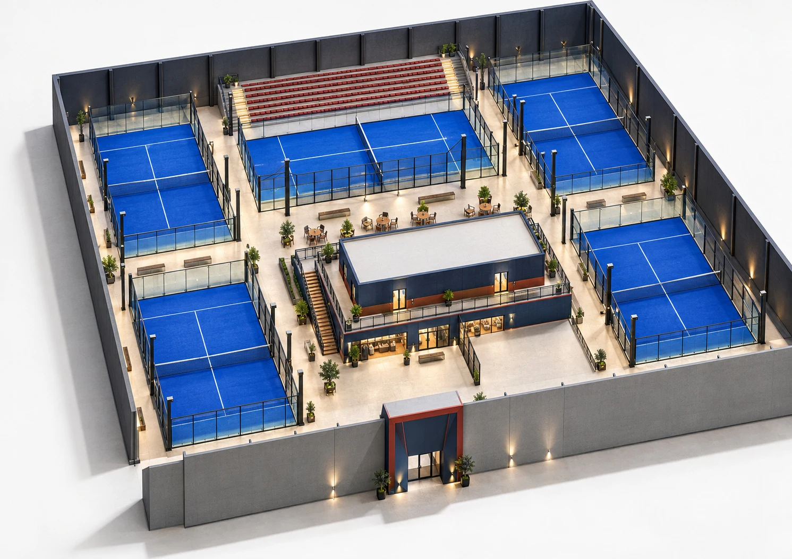
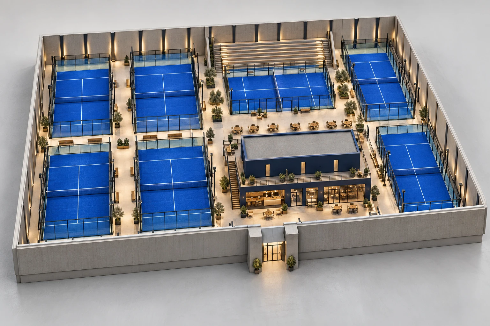

Три архитектурные концепции падел-комплекса POUND4PADEL в Махачкале. Выберите масштаб, изучите планировки и сравните инфраструктуру.

Концептуальная визуализация. Геометрия, детали и материалы требуют согласования.
Всё вокруг игры.
Самый компактный из трёх вариантов: три корта и общий сервисный блок. Ресепшн и бар объединены в зону площадью 101,68 м². Кухня, раздевалки и технические помещения занимают 189,9 м².
Объединённый ресепшн и бар
Кухня и раздевалки
Зона посадки и обзора на втором этаже
Планировка первого этажа
Из архитектурного обзора. Полная схема и пояснения доступны в PDF.

Концептуальная визуализация. Геометрия, детали и материалы требуют согласования.
Больше места для клуба.
Пять кортов с отдельными зонами встречи гостей, продажи экипировки и отдыха. Под ресепшн предусмотрено 67,5 м², под Padel Shop - 74,6 м². Кухня, раздевалки и технические помещения объединены в блок площадью 304,2 м².
Отдельный ресепшн и Padel Shop
Кухня и раздевалки
Зона посадки и обзора на втором этаже
Планировка первого этажа
Из архитектурного обзора. Полная схема и пояснения доступны в PDF.

Концептуальная визуализация. Геометрия, детали и материалы требуют согласования.
Игра в большом масштабе.
Самый большой вариант: семь кортов вокруг двухэтажного центрального блока. Ресепшн занимает 67,5 м², Padel Shop - 74,6 м², кухня, раздевалки и технические помещения - 304,2 м². Состав основных сервисов совпадает с вариантом на пять кортов.
Двухэтажный центральный блок
Кухня и раздевалки
Зона посадки и обзора на втором этаже
Планировка первого этажа
Из архитектурного обзора. Полная схема и пояснения доступны в PDF.
Сравнить варианты.
Площади из исходных архитектурных концепций, м².
Таблицу можно прокрутить по горизонтали.
Площадь и инфраструктура
Показатель
3 корта
5 кортов
7 кортов
Площадь комплекса
1 582,55*
3 086,3
3 667*
Первый этаж
1 382,5
2 773,3
3 367,9
Второй этаж
200,1*
313,0
313,0
Мужская раздевалка
56,1
130,9
130,9
Женская / VIP-раздевалка
39,3
69,4
69,4
* В исходных материалах есть расхождения площадей. Значения сохранены без исправлений; перед расчётами требуется сверка с авторами концепций.
Какие значения требуют сверки?
Для 3 кортов сумма этажей составляет 1 582,6 м² при указанной общей площади 1 582,55 м². Сумма функций второго этажа - 201,2 м² при его площади 200,1 м². Для 7 кортов сумма этажей - 3 680,9 м² при общей площади 3 667 м².
Как устроен комплекс.
Встреча гостей и клубные сервисы
Во всех трёх концепциях есть игровая зона, ресепшн и бар. В комплексе на три корта ресепшн совмещён с баром. В вариантах на пять и семь кортов ресепшн выделен отдельно, а рядом предусмотрен Padel Shop - пространство для экипировки. Отдельная площадь бара в обзорной таблице не указана.
Раздевалки и служебные помещения
На первом этаже расположены кухня, раздевалки и технические помещения. В варианте на три корта мужская раздевалка занимает 56,1 м², женская / VIP - 39,3 м². В вариантах на пять и семь кортов эти площади увеличены до 130,9 и 69,4 м² соответственно. Они входят в состав служебного блока и не прибавляются к его площади повторно.
Второй этаж для гостей и команды
Во всех вариантах на втором этаже предусмотрены зона посадки и обзора, кабинет и молитвенные. Зона посадки позволяет наблюдать за игровой частью комплекса. В вариантах на пять и семь кортов её площадь составляет 184,8 м², в компактном варианте - 132,5 м².
Фасад и интерьер
В обзоре показаны четыре исходных вида фасада с концепцией размещения вывесок POUND4PADEL, а также интерьеры всех трёх вариантов. Размещение вывесок требует согласования. Визуализации передают идею зала и центрального блока; геометрия приблизительная, детали и материалы предстоит уточнить.
Площади помещений.
Детализация из обзора. Все значения в м².
Таблицу можно прокрутить по горизонтали.
Первый этаж: входная зона и сервисы
Зона
3 корта
5 кортов
7 кортов
Объединённый ресепшн / бар
101,68
Раздельно
Раздельно
Отдельный ресепшн
В общей зоне
67,5
67,5
Padel Shop
Не выделен
74,6
74,6
Кухня, раздевалки, технические помещения
189,9
304,2
304,2
Второй этаж: общие пространства
Зона
3 корта
5 кортов
7 кортов
Зона посадки и обзора
132,5
184,8
184,8
Кабинет
34,4
23,7
23,7
Молитвенные
34,3
26,1
26,1
Это перечисленные в обзоре функции, а не полная экспликация здания. Сумма отдельных зон не заменяет общую площадь этажа. Расхождения исходных значений описаны в сравнении вариантов.
Весь обзор для инвестора
Все 8 страниц без сокращений: фасады, сравнение вариантов, планировки, интерьеры и инфраструктура.
Отправная точка обсуждения - вариант на три, пять или семь кортов. Сопоставьте общую площадь, организацию входной зоны, размер раздевалок и пространство второго этажа с параметрами рассматриваемой площадки. Архитектурный обзор показывает состав комплекса; окончательную компоновку нужно увязать с конкретным объектом.
Уточнить проектные данные
Перед расчётами необходимо сверить площади с авторами концепций, уточнить геометрию, состав помещений, материалы и размещение вывесок. Для варианта на три корта есть расхождения в общей площади и составе второго этажа; для семи кортов - между суммой этажей и указанной площадью комплекса.
Подготовить инвестиционное предложение
Следующий этап обсуждения - бюджет, финансовая модель и условия участия. Для оценки проекта потребуется определить затраты на реализацию и запуск, операционные расходы, предположения по загрузке и выручке, сроки и распределение ответственности. Эти параметры предстоит разработать отдельно: в представленном PDF нет суммы инвестиций, расчёта доходности, срока окупаемости или условий входа инвестора.